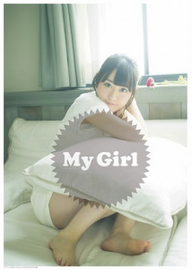
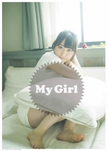

7月26日(水)発売の2ndアルバム「Cherry Passport」の発売を記念して、
イベントの開催が決定しました！！
【イベント内容】
ポスターお渡し会
【イベントスケジュール】
7月30日(日)
★11:30スタート（11:00開場）＜アニメイト回①＞
★13:30スタート（13:00開場）＜アニメイト回②＞
★15:30スタート（15:00開場）＜ゲーマーズ・とらのあな回＞
場所：都内某所
8月6日(日)
★11:30スタート（10:45開場）
場所：名古屋某所
★16:00スタート（15:30開場）
場所：ゲーマーズなんば店
8月12日(土)
★11:00スタート（10:30開場）
場所：アニメイト宇都宮
★16:00（15:30開場）
場所：アニメイト山形
【参加方法】
■7月26日(水)発売の2ndアルバム「Cherry Passport」（CD+BD盤もしくはCD+DVD盤）を、下記対象店舗にて、ご予約（全額内金）頂きましたお客様にイベント参加応募券をプレゼント。ご応募頂いた方の中から抽選でポスターお渡し会にご招待致します。
＊全額内金予約でイベント参加券お渡し後のキャンセルは不可となりますのでご注意下さい。
＊当日、会場にてご本人確認をさせて頂きます。ご当選者ご本人であることを証明できる顔写真付きの証明書（運転免許証・パスポート・写真付き住基カード・学生証・マイナンバーなど(コピー・期限切れ・社員証・taspo・マイナンバー通知カードは不可)）を必ずお持ち下さい。イベント会場へご入場頂く際、当選されたご本人である事の確認をさせて頂きます。お忘れになるとご入場できませんのでご注意下さい。
ご本人確認ができない場合は、イベント参加をお断りさせて頂きます。
【応募締切】
■2017年6月30日(金) 消印有効
※応募締め切りが商品発売前となります。ご注意ください。
※詳しい応募方法は各店舗にお問い合わせ下さい。
※オンラインショップをご利用のお客様は通販サイトでの注意文を別途ご確認ください。
【応募券配布対象店舗】
■アニメイト全店（オンライン含む）
対象イベント：都内某所（アニメイト回①②）
名古屋某所
アニメイト宇都宮
アニメイト山形
■ゲーマーズ全店（通販含む）
対象イベント：都内某所（ゲーマーズ回）
ゲーマーズなんば店
■とらのあな全店（秋葉原A・C、なんばA、通信販売除く）
対象イベント：都内某所（とらのあな回）
【注意事項】
・「イベント参加応募券」は、いかなる理由があろうとも再発行は致しません。
・「イベント参加応募券」の譲渡及び転売行為は一切禁止とさせて頂きます。
・応募締切が商品発売前となります。ご注意ください。
・応募者多数の場合、イベント当選はお一人さま１回とさせて頂く場合がございます。
・参加応募用紙に記入漏れ等の不備があった場合無効となります。
・当選者の発表は、当選はがきの発送をもってかえさせて頂きます。
・当選者の方にのみ、7月下旬から随時、当選はがきをご郵送させて頂きます。
・イベント当日の座席・順番は、当選はがきに明記されております座席・順番での参加となります。
・集合時間に遅れた場合参加できない場合もございます。ご注意下さい。
・当選はがきは、当選者ご本人様に対してのみ有効となります。代理の方等への貸与・譲渡は無効となります。
・当選はがきの転売行為、オークションへの出品は禁止とさせて頂きます。
・不正行為が発覚した場合、イベントへのご参加をお断りさせて頂きます。
その場合でも商品の払い戻し・返金等のご対応はできません。予めご了承下さい。
また今後一切のイベントへのご参加もお断りさせて頂きます。
・抽選の当落に関するお問い合わせには一切お答えできません。予めご了承下さい。
・その他、イベント内容等に関するお問い合わせにもお答えできませんので、予めご了承下さい。
・当日、会場周辺での座り込みや待ち伏せ・集会等は、他のお客様の迷惑となりますので禁止とさせて頂きます。
・イベント中はスタッフがお客様の肩や腕などに直接触れて誘導する場合がございます。
この事をご了承頂けるお客様のみイベントへご参加下さい。
・安全面・防犯面・警備強化の為、お客様のお荷物検査・ボディチェックをさせて頂く場合がございます。
またお渡し会にご参加の際、お手荷物をお預かりさせて頂く場合がございます。皆様のご理解とご協力をお願い致します。
・防犯の為、イベント会場への必要以上のお手荷物の持ち込みをお断りさせて頂きます。
キャリーバック等の大きなお荷物は会場へのお持ち込みをお断りさせて頂きます。事前に駅ロッカー等のご利用をお願い致します。
・イベント会場ではお荷物のお預かりはできません。
・イベント会場内外で発生した事故・盗難、お客様の物品の損失などにつきましては主催者・会場・出演者は一切責任を負いません。
貴重品は各自で管理して下さい。
・会場までの交通費・宿泊費等はお客様の自己負担となります。
・イベント中のスケッチブック、サインボード等の使用は、固くお断り致します。
・いかなる機材による写真撮影、動画撮影、録音行為は禁止します。（撮影補助機材の使用も禁止致します）
・イベント内容は予告なしに変更する場合がございます。
また、天候・出演者やその他の都合によりやむをえずイベントを中止する事がございます。予めご了承下さい。
・当日の事故・混乱防止のため、イベントでは様々な制限を設けさせて頂くことがあります。予めご了承下さい。
・これらの注意事項をお守り頂けない方はイベントにご参加頂けなくなる場合もございます。
また、イベントが中止となることもございます。ご理解とご協力をお願い致します。

 2017.05.08
2017.05.08


 
